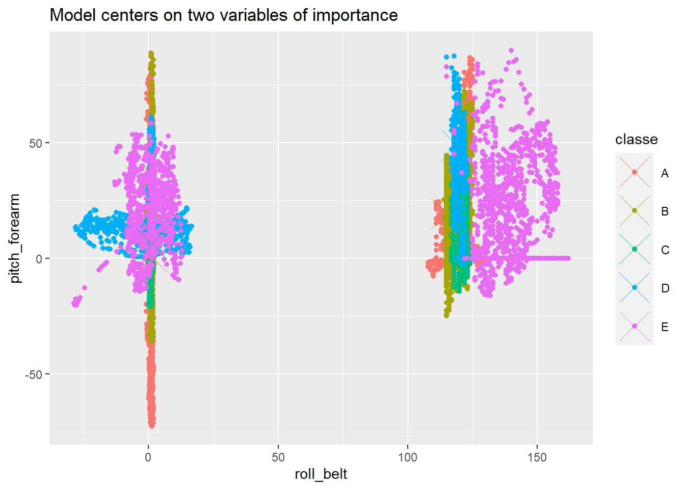

library(caret)
library(gbm)
library(dplyr)
library(randomForest)
library(ggplot2)
set.seed(90210)
Ntree <- 200
download.file("https://d396qusza40orc.cloudfront.net/predmachlearn/pml-training.csv", "training.csv")
download.file("https://d396qusza40orc.cloudfront.net/predmachlearn/pml-testing.csv", "testing.csv")
train <- read.csv2("training.csv", sep = ",")[,-c(1:7)]
test <- read.csv2("testing.csv", sep = ",")[,-c(1:7)]
The original paper was written on 12/18/2020
Executive Summary
This report analyzes collected data on different users preforming barbell lifts performed at different levels of quality. A machine learning algorithm was used to create a model to determine the user’s rating based on data collected from multiple accelerometers. More information on the project can be found here.
Analysis
Initialization
The following code was used to initialize the required R libraries, as well as downloading the required data and store it into memory. There are some columns of the data that were not required for modelling which were excluded (ex. usernames).
Reducing predictors
The data contains way too many predictors (153 in total) to produce accurate and simple models. Some trimming is required. The first trim is performed with the near zero variance function from the caret library, which finds the predictors that exhibit near zero variation. These predictors would add little benefit to include in models.
nz <- nearZeroVar(train)
train <- train[,-nz]
test <- test[-nz]From this step, the number of predictors is reduced to 94. There remains numerous NA values in the data. These values are examined in the next chunk of code.
maxi <- length(train) - 1
valna <- 1:maxi
for (i in 1:maxi) {
train[,i] <- as.numeric(train[,i])
test[,i] <- as.numeric(test[,i])
valna[i] <- mean(is.na(train[,i]))
}
table(valna)valna
0 0.979308938946081
52 41 The code shows that there are 52 predictors that have no missing data and 41 predictors that are mostly missing values. These predictors would add little value to the modelling and are removed with the following code
train <- train[, valna == 0]
test <- test[, valna == 0]The training was then divided to create a validation set which will be used for cross validation. Note that the random forest algorithm has built in cross validation with the “out of bag error”. About 1/3 of the data is used in a random forest.
Valid <- createDataPartition(train$classe, p = 0.3)[[1]]
valid <- train[Valid,]
train <- train[-Valid,]The next step is to utilize the variable of importance function in the caret library to reduce the number of predictors even further. The train data is still very large, but by making a sample set from the training data and modelling from that we can get a reasonable approximation of the variables of importance.
strain <- rbind(sample_n(train[train$classe == "A",],round(mean(train$classe == "A")*200,0)),
sample_n(train[train$classe == "B",],round(mean(train$classe == "B")*200,0)),
sample_n(train[train$classe == "C",],round(mean(train$classe == "C")*200,0)),
sample_n(train[train$classe == "D",],round(mean(train$classe == "D")*200,0)),
sample_n(train[train$classe == "E",],round(mean(train$classe == "E")*200,0))
)The sample set was set to ensure an accurate representation of the ‘classe’ variable in the training data. Two models were completed and their variables of importance were added together.
mdl1 <- train(classe~., data = strain, method = "rf", ntree = Ntree)
mdl2 <- train(classe~., data = strain, method = "gbm", verbose = FALSE)
var <- varImp(mdl1)$importance > 50 | varImp(mdl2)$importance > 50
varorder <- order(varImp(mdl1)$importance, decreasing = TRUE)
Varimp <- row.names(varImp(mdl1)$importance)[varorder[1:2]]A value of 50 was used for a cut-off value. The total number of predictors has been reduced to 4.
valid <- valid[,var]
train <- train[,var] %>% slice_sample(prop = 0.75)
test <- test[,var]Modelling
With the reduced predictors, the models can now be trained. Since these model will look at the entire training data set, it will require a lot of time. The models include:
- Random forest
- Generalized Boosted
- Linear Discriminant
- Combined
The randomForest function is used as it is more efficient than the train function. The data method is also more efficient than using the formula method.
mdl11 <- randomForest(x = train[,1:(ncol(train) - 1)], y = as.factor(train[,ncol(train)]), ntree = Ntree, proximity = TRUE)
mdl21 <- train(classe~., data = train, method = "gbm", verbose = FALSE)
mdl31 <- train(classe~., data = train, method = "lda")The following code constructs the combined model
pmdl11 <- predict(mdl11, valid)
pmdl21 <- predict(mdl21, valid)
pmdl31 <- predict(mdl31, valid)
join <- data.frame(pmdl11, pmdl21, pmdl31, classe = valid$classe)
jmdl <- randomForest(x = join[,1:3], y = as.factor(join$classe), ntree = Ntree)Model Evaluation
The new models will need to be examined against the validation data set. The out of bag error for the random forest models were not used, as the validation data provides a uniform comparison for all models. The following function was used to test the models:
Exacc <- function(mdl, test){
mean(predict(mdl,test) == test$classe)
}The model’s accuracy are summarized in the following dataframe when they are used to predict the results in the validation set:
Model accuracy
1 mdl11 0.8935303
2 mdl21 0.7989472
3 mdl31 0.3625403
4 joint 0.8897945Conclusion
From the results from the model testing, it is clear that the random forest and the combined are the most accurate models for the validation set. The combined model has approximately the same level of accuracy as the random forest, meaning it is the most heavily weighted model. It also means that the inclusion of the boosted and linear discriminant models do not contribute to its accuracy. For simplification, the random forest model is the best model.
Plot
The centres of the model can be found from the proximity data. The proximity data is compared to two predictors, the most important predictors. The two most significant predictors would sometimes vary, so the code was changed to be flexible to it.
index <- names(train) %in% Varimp
mdlp <- classCenter(train[index], train$classe, mdl11$proximity)
mdlp <- as.data.frame(mdlp)
mdlp$classe <- rownames(mdlp)This centre data can be included with the training data. There are distinctly different regions based off of the different classe values, but the other predictors also contribute to model accuracy.
index <- names(train) %in% Varimp
names <- names(train[index])
f <- function(name1, name2){
xval <- sym(name1)
yval <- sym(name2)
ggplot(data = train, aes_string(x = xval, y = yval, col = "classe")) +
geom_point() +
geom_point(aes_string(x = xval, y = yval, col = "classe"), size = 10, shape = 4, data = mdlp) +
labs(title = "Model centers on two variables of importance")
}
f(names[1], names[2])